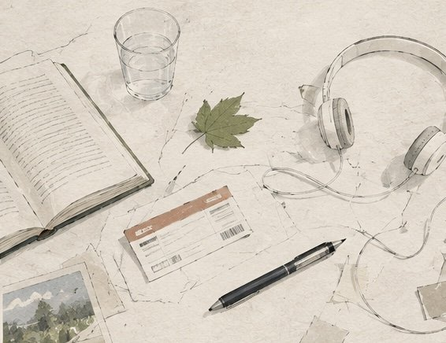

01 / Journal
随笔与日常
这里不写日记。主要记四件事：设计上的想法、学习里卡住的地方、看到的东西，和一些还不太成熟的思考。生活只占很少一点。
想要聊聊Contact
没有订阅，也没有 RSS。如果你也写东西、做设计，或者只是想聊两句，写信给我就好。

01 / Journal
这里不写日记。主要记四件事：设计上的想法、学习里卡住的地方、看到的东西，和一些还不太成熟的思考。生活只占很少一点。
没有订阅，也没有 RSS。如果你也写东西、做设计，或者只是想聊两句，写信给我就好。
